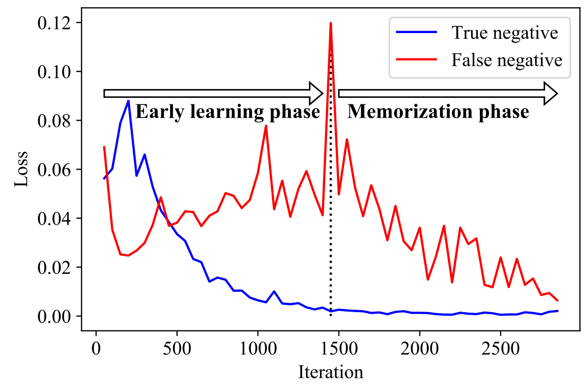
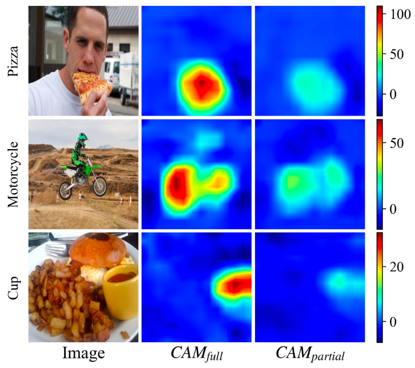

|
Youngwook Kim
I am a Ph.D candidate at Department of Electrical and Computer Engineering, Seoul National University, with advisor Jungwoo Lee.
I received my bachelor's degree from Department of Civil and Environmental Engineering, Seoul National University, in 2018. During this period, I received a two-year National Science & Technology Scholarship.
Email /
Google Scholar /
Github
|
|
|
Research
I'm interested in computer vision, learning from noisy labels, multi-label learning, and weakly supervised learning.
|
|

|
Large Loss Matters in Weakly Supervised Multi-Label Classification
Youngwook Kim*, Jae Myung Kim*, Zeynep Akata, Jungwoo Lee
CVPR, 2022
github /
arxiv
By utilizing memorization effect, we can efficiently train multi-label classification model with small number of partially annotated labels.
|
|

|
Bridging the Gap between Model Explanations in Partially Annotated Multi-label Classification
Youngwook Kim, Jae Myung Kim, Jieun Jeong, Cordelia Schmid, Zeynep Akata, Jungwoo Lee
CVPR, 2023
github /
arxiv
By investigating the difference in model explanation, we devise a simple but effective solution to compensate the damage by false negative labels.
|
|
Invited Talk
|
University of Seoul, June 2022
Kakao enterprise, July 2022
|
|
TA Experience
|
Introduction to deep learning, Fall 2018
Information theory, Spring 2020
|
The format of this website is borrowed from Jon Barron.
|
|